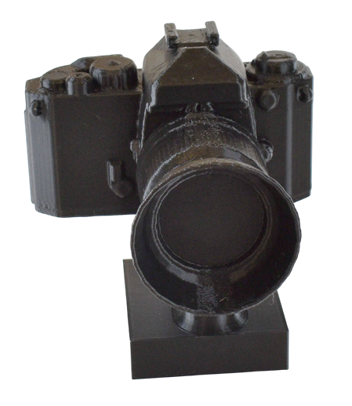
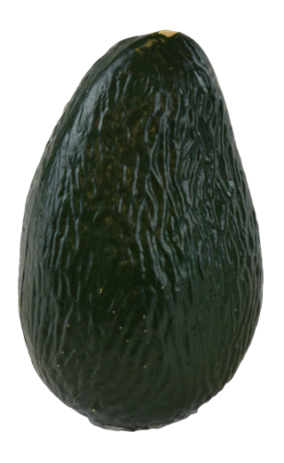
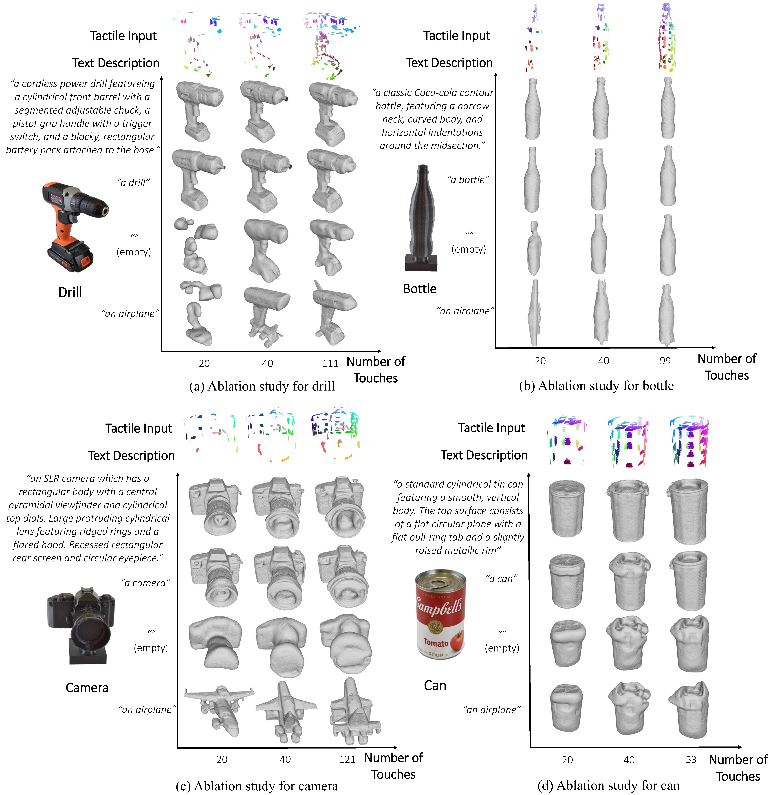

Open-World Reconstruction from 20 Touches
Interact with our reconstructed objects below. Drag to rotate, scroll to zoom.
Potted Meat Can (prompt: "a can")
Real Object
Ground Truth
Reconstruction
Camera Model (prompt: "a camera")
Real Object

Ground Truth
Reconstruction
Power Drill (Prompt: "a drill")
Real Object
Reconstruction
Avocado (Prompt: "an avodaco")
Real Object

Reconstruction
Refining Fine Geometries
Comparison between Stage 1 (Coarse SDF) and Stage 2 (DMTet Refinement). The explicit representation allows the diffusion model to recover high-frequency surface details like the ridges on a lens hood or the textured skin of an avocado.

Ablation Studies
Class-level prompts are often sufficient, while incorrect prompts can hallucinate semantically wrong shapes. More touches generally improve reconstruction quality.
